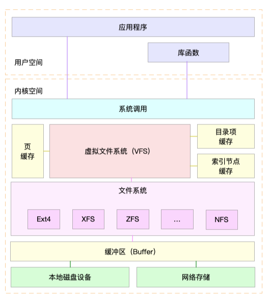
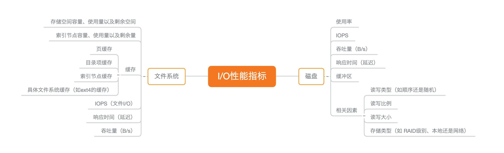
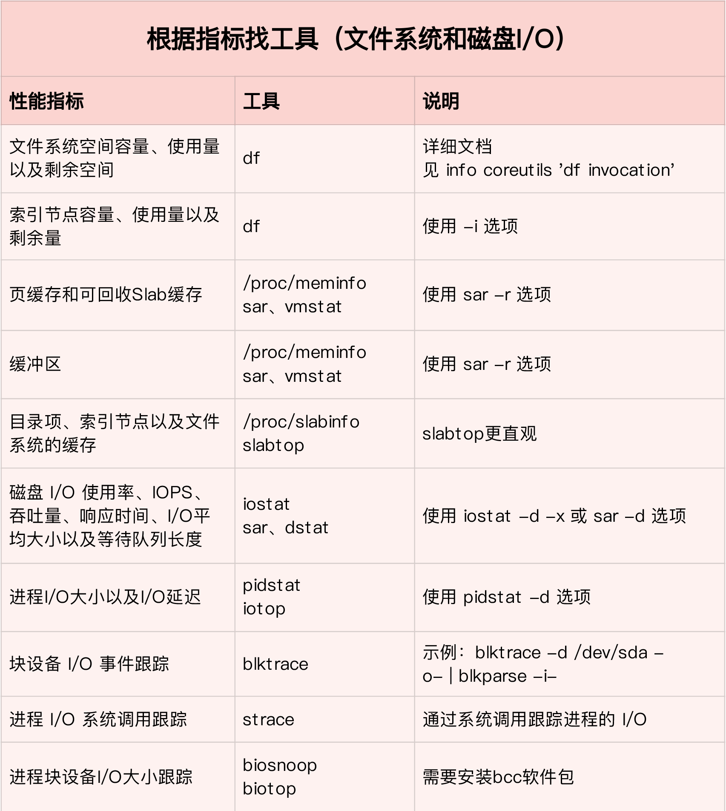
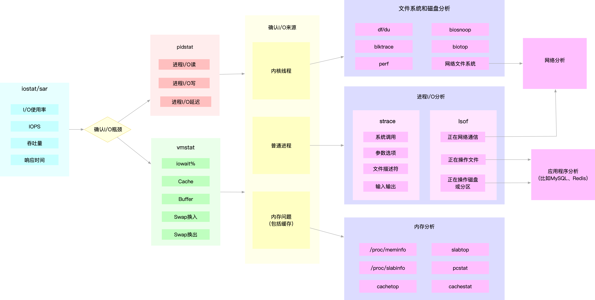

- 00 开篇词 别再让Linux性能问题成为你的绊脚石.md.html
- 01 如何学习Linux性能优化？.md.html
- 02 基础篇：到底应该怎么理解“平均负载”？.md.html
- 03 基础篇：经常说的 CPU 上下文切换是什么意思？（上）.md.html
- 04 基础篇：经常说的 CPU 上下文切换是什么意思？（下）.md.html
- 05 基础篇：某个应用的CPU使用率居然达到100%，我该怎么办？.md.html
- 06 案例篇：系统的 CPU 使用率很高，但为啥却找不到高 CPU 的应用？.md.html
- 07 案例篇：系统中出现大量不可中断进程和僵尸进程怎么办？（上）.md.html
- 08 案例篇：系统中出现大量不可中断进程和僵尸进程怎么办？（下）.md.html
- 09 基础篇：怎么理解Linux软中断？.md.html
- 10 案例篇：系统的软中断CPU使用率升高，我该怎么办？.md.html
- 11 套路篇：如何迅速分析出系统CPU的瓶颈在哪里？.md.html
- 12 套路篇：CPU 性能优化的几个思路.md.html
- 13 答疑（一）：无法模拟出 RES 中断的问题，怎么办？.md.html
- 14 答疑（二）：如何用perf工具分析Java程序？.md.html
- 15 基础篇：Linux内存是怎么工作的？.md.html
- 16 基础篇：怎么理解内存中的Buffer和Cache？.md.html
- 17 案例篇：如何利用系统缓存优化程序的运行效率？.md.html
- 18 案例篇：内存泄漏了，我该如何定位和处理？.md.html
- 19 案例篇：为什么系统的Swap变高了（上）.md.html
- 20 案例篇：为什么系统的Swap变高了？（下）.md.html
- 21 套路篇：如何“快准狠”找到系统内存的问题？.md.html
- 22 答疑（三）：文件系统与磁盘的区别是什么？.md.html
- 23 基础篇：Linux 文件系统是怎么工作的？.md.html
- 24 基础篇：Linux 磁盘I_O是怎么工作的（上）.md.html
- 25 基础篇：Linux 磁盘I_O是怎么工作的（下）.md.html
- 26 案例篇：如何找出狂打日志的“内鬼”？.md.html
- 27 案例篇：为什么我的磁盘I_O延迟很高？.md.html
- 28 案例篇：一个SQL查询要15秒，这是怎么回事？.md.html
- 29 案例篇：Redis响应严重延迟，如何解决？.md.html
- 30 套路篇：如何迅速分析出系统I_O的瓶颈在哪里？.md.html
- 31 套路篇：磁盘 I_O 性能优化的几个思路.md.html
- 32 答疑（四）：阻塞、非阻塞 I_O 与同步、异步 I_O 的区别和联系.md.html
- 33 关于 Linux 网络，你必须知道这些（上）.md.html
- 34 关于 Linux 网络，你必须知道这些（下）.md.html
- 35 基础篇：C10K 和 C1000K 回顾.md.html
- 36 套路篇：怎么评估系统的网络性能？.md.html
- 37 案例篇：DNS 解析时快时慢，我该怎么办？.md.html
- 38 案例篇：怎么使用 tcpdump 和 Wireshark 分析网络流量？.md.html
- 39 案例篇：怎么缓解 DDoS 攻击带来的性能下降问题？.md.html
- 40 案例篇：网络请求延迟变大了，我该怎么办？.md.html
- 41 案例篇：如何优化 NAT 性能？（上）.md.html
- 42 案例篇：如何优化 NAT 性能？（下）.md.html
- 43 套路篇：网络性能优化的几个思路（上）.md.html
- 44 套路篇：网络性能优化的几个思路（下）.md.html
- 45 答疑（五）：网络收发过程中，缓冲区位置在哪里？.md.html
- 46 案例篇：为什么应用容器化后，启动慢了很多？.md.html
- 47 案例篇：服务器总是时不时丢包，我该怎么办？（上）.md.html
- 48 案例篇：服务器总是时不时丢包，我该怎么办？（下）.md.html
- 49 案例篇：内核线程 CPU 利用率太高，我该怎么办？.md.html
- 50 案例篇：动态追踪怎么用？（上）.md.html
- 51 案例篇：动态追踪怎么用？（下）.md.html
- 52 案例篇：服务吞吐量下降很厉害，怎么分析？.md.html
- 53 套路篇：系统监控的综合思路.md.html
- 54 套路篇：应用监控的一般思路.md.html
- 55 套路篇：分析性能问题的一般步骤.md.html
- 56 套路篇：优化性能问题的一般方法.md.html
- 57 套路篇：Linux 性能工具速查.md.html
- 58 答疑（六）：容器冷启动如何性能分析？.md.html
- 加餐（一） 书单推荐：性能优化和Linux 系统原理.md.html
- 加餐（二） 书单推荐：网络原理和 Linux 内核实现.md.html
- 用户故事 “半路出家 ”，也要顺利拿下性能优化！.md.html
- 用户故事 运维和开发工程师们怎么说？.md.html
- 结束语 愿你攻克性能难关.md.html
- 捐赠
30 套路篇：如何迅速分析出系统I_O的瓶颈在哪里？
你好，我是倪朋飞。
前几节学习中，我们通过几个案例，分析了各种常见的 I/O 性能问题。通过这些实战操作，你应该已经熟悉了 I/O 性能问题的分析和定位思路，也掌握了很多 I/O 性能分析的工具。
不过，我想你可能还是会困惑，如果离开专栏，换成其他的实际工作场景，案例中提到的各种性能指标和工具，又该如何选择呢？
上一节最后，我留下了作业，让你自己整理思路。今天，我就带你一起复习，总结一下，如何“快准狠”定位系统的 I/O 瓶颈；并且梳理清楚，在不同场景下，指标工具怎么选，性能瓶颈又该如何定位。
性能指标
老规矩，我们先来回顾一下，描述 I/O 的性能指标有哪些？你可以先回想一下文件系统和磁盘 I/O 的原理，结合下面这张 Linux 系统的 I/O 栈图，凭着记忆和理解自己写一写。或者，你也可以打开前面的文章，挨个复习总结一下。

学了这么久的 I/O 性能知识，一说起 I/O 指标，你应该首先会想到分类描述。我们要区分开文件系统和磁盘，分别用不同指标来描述它们的性能。
文件系统I/O性能指标
我们先来看文件系统的情况。
首先，最容易想到的是存储空间的使用情况，包括容量、使用量以及剩余空间等。我们通常也称这些为磁盘空间的使用量，因为文件系统的数据最终还是存储在磁盘上。
不过要注意，这些只是文件系统向外展示的空间使用，而非在磁盘空间的真实用量，因为文件系统的元数据也会占用磁盘空间。
而且，如果你配置了 RAID，从文件系统看到的使用量跟实际磁盘的占用空间，也会因为 RAID 级别的不同而不一样。比方说，配置 RAID10 后，你从文件系统最多也只能看到所有磁盘容量的一半。
除了数据本身的存储空间，还有一个容易忽略的是索引节点的使用情况，它也包括容量、使用量以及剩余量等三个指标。如果文件系统中存储过多的小文件，就可能碰到索引节点容量已满的问题。
其次，你应该想到的是前面多次提到过的缓存使用情况，包括页缓存、目录项缓存、索引节点缓存以及各个具体文件系统（如 ext4、XFS 等）的缓存。这些缓存会使用速度更快的内存，用来临时存储文件数据或者文件系统的元数据，从而可以减少访问慢速磁盘的次数。
除了以上这两点，文件 I/O 也是很重要的性能指标，包括 IOPS（包括 r/s 和 w/s）、响应时间（延迟）以及吞吐量（B/s）等。在考察这类指标时，通常还要考虑实际文件的读写情况。比如，结合文件大小、文件数量、I/O 类型等，综合分析文件 I/O 的性能。
诚然，这些性能指标非常重要，但不幸的是，Linux 文件系统并没提供，直接查看这些指标的方法。我们只能通过系统调用、动态跟踪或者基准测试等方法，间接进行观察、评估。
不过，实际上，这些指标在我们考察磁盘性能时更容易见到，因为 Linux 为磁盘性能提供了更详细的数据。
磁盘I/O性能指标
接下来，我们就来具体看看，哪些性能指标可以衡量磁盘 I/O 的性能。
在磁盘 I/O 原理的文章中，我曾提到过四个核心的磁盘 I/O 指标。
使用率，是指磁盘忙处理I/O请求的百分比。过高的使用率（比如超过60%）通常意味着磁盘I/O存在性能瓶颈。
IOPS（Input/Output Per Second），是指每秒的 I/O 请求数。
吞吐量，是指每秒的 I/O 请求大小。
响应时间，是指从发出 I/O 请求到收到响应的间隔时间。
考察这些指标时，一定要注意综合 I/O 的具体场景来分析，比如读写类型（顺序还是随机）、读写比例、读写大小、存储类型（有无RAID以及RAID级别、本地存储还是网络存储）等。
不过，这里有个大忌，就是把不同场景的 I/O 性能指标，直接进行分析对比。这是很常见的一个误区，你一定要避免。
除了这些指标外，在前面 Cache 和 Buffer 原理的文章中，我曾多次提到，缓冲区（Buffer）也是要重点掌握的指标，它经常出现在内存和磁盘问题的分析中。
文件系统和磁盘 I/O 的这些指标都很有用，需要我们熟练掌握，所以我总结成了一张图，帮你分类和记忆。你可以保存并打印出来，方便随时查看复习，也可以把它当成 I/O 性能分析的“指标筛选”清单使用。

性能工具
掌握文件系统和磁盘 I/O 的性能指标后，我们还要知道，怎样去获取这些指标，也就是搞明白工具的使用问题。
你还记得前面的基础篇和案例篇中，都分别用了哪些工具吗？我们一起回顾下这些内容。
第一，在文件系统的原理中，我介绍了查看文件系统容量的工具 df。它既可以查看文件系统数据的空间容量，也可以查看索引节点的容量。至于文件系统缓存，我们通过/proc/meminfo、/proc/slabinfo 以及 slabtop 等各种来源，观察页缓存、目录项缓存、索引节点缓存以及具体文件系统的缓存情况。
第二，在磁盘 I/O 的原理中，我们分别用 iostat 和 pidstat 观察了磁盘和进程的 I/O 情况。它们都是最常用的 I/O 性能分析工具。通过 iostat ，我们可以得到磁盘的 I/O 使用率、吞吐量、响应时间以及 IOPS 等性能指标；而通过 pidstat ，则可以观察到进程的 I/O 吞吐量以及块设备 I/O 的延迟等。
第三，在狂打日志的案例中，我们先用 top 查看系统的 CPU 使用情况，发现 iowait 比较高；然后，又用 iostat 发现了磁盘的 I/O 使用率瓶颈，并用 pidstat 找出了大量 I/O 的进程；最后，通过 strace 和 lsof，我们找出了问题进程正在读写的文件，并最终锁定性能问题的来源——原来是进程在狂打日志。
第四，在磁盘 I/O 延迟的单词热度案例中，我们同样先用 top、iostat ，发现磁盘有 I/O 瓶颈，并用 pidstat 找出了大量 I/O 的进程。可接下来，想要照搬上次操作的我们失败了。在随后的 strace 命令中，我们居然没看到 write 系统调用。于是，我们换了一个思路，用新工具 filetop 和 opensnoop ，从内核中跟踪系统调用，最终找出瓶颈的来源。
最后，在 MySQL 和 Redis 的案例中，同样的思路，我们先用 top、iostat 以及 pidstat ，确定并找出 I/O 性能问题的瓶颈来源，它们正是 mysqld 和 redis-server。随后，我们又用 strace+lsof 找出了它们正在读写的文件。
关于 MySQL 案例，根据 mysqld 正在读写的文件路径，再结合 MySQL 数据库引擎的原理，我们不仅找出了数据库和数据表的名称，还进一步发现了慢查询的问题，最终通过优化索引解决了性能瓶颈。
至于 Redis 案例，根据 redis-server 读写的文件，以及正在进行网络通信的 TCP Socket，再结合 Redis 的工作原理，我们发现 Redis 持久化选项配置有问题；从 TCP Socket 通信的数据中，我们还发现了客户端的不合理行为。于是，我们修改 Redis 配置选项，并优化了客户端使用Redis的方式，从而减少网络通信次数，解决性能问题。
一下子复习了这么多，你是不是觉得头昏脑胀，再次想感叹性能工具的繁杂呀！其实，只要把相应的系统工作原理捋明白，工具使用并不难
性能指标和工具的联系
同前面CPU和内存板块的学习一样，我建议从指标和工具两个不同维度出发，整理记忆。
从I/O指标出发，你更容易把性能工具同系统工作原理关联起来，对性能问题有宏观的认识和把握。
而从性能工具出发，可以让你更快上手使用工具，迅速找出我们想观察的性能指标。特别是在工具有限的情况下，我们更要充分利用好手头的每一个工具，少量工具也要尽力挖掘出大量信息。
第一个维度，从文件系统和磁盘 I/O 的性能指标出发。换句话说，当你想查看某个性能指标时，要清楚知道，哪些工具可以做到。
根据不同的性能指标，对提供指标的性能工具进行分类和理解。这样，在实际排查性能问题时，你就可以清楚知道，什么工具可以提供你想要的指标，而不是毫无根据地挨个尝试，撞运气。
虽然你不需要把所有相关的工具背下来，但如果能记清楚每个指标对应的工具特性，实际操作起来，一定能更高效、灵活。
这里，我把提供 I/O 性能指标的工具做成了一个表格，方便你梳理关系和理解记忆。你可以把它保存并打印出来，随时记忆。当然，你也可以把它当成一个“指标工具”指南来使用。

下面，我们再来看第二个维度。
第二个维度，从工具出发。也就是当你已经安装了某个工具后，要知道这个工具能提供哪些指标。
这在实际环境中，特别是生产环境中也是非常重要的。因为很多情况下，你并没有权限安装新的工具包，只能最大化地利用好系统已有的工具，而这就需要你对它们有足够的了解。
具体到每个工具的使用方法，一般都支持丰富的配置选项。不过不用担心，这些配置选项并不用背下来。你只要知道有哪些工具，以及这些工具的基本功能是什么就够了。真正要用到的时候， 通过 man 命令，查它们的使用手册就可以了。
同样的，我也将这些常用工具汇总成了一个表格，方便你区分和理解。自然，你也可以当成一个“工具指标”指南使用，需要时查表即可。

如何迅速分析I/O的性能瓶颈
到这里，相信你对内存的性能指标已经非常熟悉，也清楚每种性能指标分别能用什么工具来获取。
你应该发现了，比起前两个板块，虽然文件系统和磁盘的 I/O 性能指标仍比较多，但核心的性能工具，其实就是那么几个。熟练掌握它们，再根据实际系统的现象，并配合系统和应用程序的原理， I/O 性能分析就很清晰了。
不过，不管怎么说，如果每次一碰到 I/O 的性能问题，就把上面提到的所有工具跑一遍，肯定是不现实的。
在实际生产环境中，我们希望的是，尽可能快地定位系统的瓶颈，然后尽可能快地优化性能，也就是要又快又准地解决性能问题。
那有没有什么方法，可以又快又准地找出系统的I/O 瓶颈呢？答案是肯定的。
还是那句话，找关联。多种性能指标间都有一定的关联性，不要完全孤立的看待他们。想弄清楚性能指标的关联性，就要通晓每种性能指标的工作原理。这也是为什么我在介绍每个性能指标时，都要穿插讲解相关的系统原理，再次希望你能记住这一点。
以我们前面几期的案例为例，如果你仔细对比前面的几个案例，从 I/O延迟的案例到 MySQL 和 Redis 的案例，就会发现，虽然这些问题千差万别，但从 I/O 角度来分析，最开始的分析思路基本上类似，都是：
先用 iostat 发现磁盘 I/O 性能瓶颈；
再借助 pidstat ，定位出导致瓶颈的进程；
随后分析进程的 I/O 行为；
最后，结合应用程序的原理，分析这些 I/O 的来源。
所以，为了缩小排查范围，我通常会先运行那几个支持指标较多的工具，如 iostat、vmstat、pidstat 等。然后再根据观察到的现象，结合系统和应用程序的原理，寻找下一步的分析方向。我把这个过程画成了一张图，你可以保存下来参考使用。

图中列出了最常用的几个文件系统和磁盘 I/O 性能分析工具，以及相应的分析流程，箭头则表示分析方向。这其中，iostat、vmstat、pidstat 是最核心的几个性能工具，它们也提供了最重要的 I/O 性能指标。举几个例子你可能更容易理解。
例如，在前面讲过的 MySQL 和 Redis 案例中，我们就是通过 iostat 确认磁盘出现 I/O 性能瓶颈，然后用 pidstat 找出 I/O 最大的进程，接着借助 strace 找出该进程正在读写的文件，最后结合应用程序的原理，找出大量 I/O 的原因。
再如，当你用 iostat 发现磁盘有 I/O 性能瓶颈后，再用 pidstat 和 vmstat 检查，可能会发现 I/O 来自内核线程，如 Swap 使用大量升高。这种情况下，你就得进行内存分析了，先找出占用大量内存的进程，再设法减少内存的使用。
另外注意，我在这个图中只列出了最核心的几个性能工具，并没有列出前面表格中的所有工具。这么做，一方面是不想用大量的工具列表吓到你。在学习之初就接触所有核心或小众的工具，不见得是好事。另一方面，也是希望你能先把重心放在核心工具上，毕竟熟练掌握它们，就可以解决大多数问题。
所以，你可以保存下这张图，作为文件系统和磁盘I/O性能分析的思路图谱。从最核心的这几个工具开始，通过我提供的那些案例，自己在真实环境里实践，拿下它们。
小结
今天，我们一起复习了常见的文件系统和磁盘 I/O 性能指标，梳理了常见的 I/O 性能观测工具，并建立了性能指标和工具的关联。最后，我们还总结了快速分析 I/O 性能问题的思路。
还是那句话，虽然 I/O 的性能指标很多，相应的性能分析工具也有不少，但熟悉了各指标含义后，你就会自然找到它们的关联。顺着这个思路往下走，掌握常用的分析套路也并不难。
思考
专栏学习中，我只列举了几个最常见的案例，帮你理解文件系统和磁盘 I/O 性能的原理和分析方法。你肯定也碰到过不少其他 I/O 性能问题吧。我想请你一起聊聊，你碰到过哪些 I/O 性能问题呢？你又是怎么分析出它的瓶颈呢？
欢迎在留言区和我讨论，也欢迎你把这篇文章分享给你的同事、朋友。我们一起在实战中演练，在交流中进步。
© 2019 - 2023 Liangliang Lee. Powered by gin and hexo-theme-book.